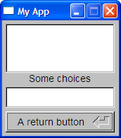

murgaLua was born from a frustration with the size and licensing of some of the development tools I have been using. I am a Java developer by trade, but for my personal projects I wanted something that was better to deploy, something that :
Now, there are many things on the market that fulfilled most of those criteria, however, there is nothing that fulfills all of them or that comes close in terms of size.
So I decided to see what I could do ...
The first step was to find a core language that was small, easy to learn, portable, and that had advanced features.
I settled on Lua (http://www.lua.org/), it is popular in the embedded and game development space and appeared to be easy to bind to.
The next step was finding bindings that where rich and small enough, I found that the Lua community had done most of that work for me :
The murgaLua distribution includes all required binaries along with examples and all the source and documentation for my code and used libraries.
Basically everything you could need for developing with murgaLua.
This is what's in this archive :
Well ... There isn't really any installing, just extract the archive and run the executable for your platform.
Under Windows I would recommend installing MSys (http://www.mingw.org/msys.shtml) or Cygwin (http://cygwin.com/) to get BASH, RXVT and all those nice UNIX things that Windows lacks.
Under Linux I'd recommend copying the murgaLua executable to "/usr/bin", this way you'll be able to add "#!/usr/bin/murgaLua" at the start of your scripts and CHMOD them so that they can run as normal UNIX scripts.
Lua is a lean programming language that combines simple
procedural syntax with powerful constructs for handling data and
extensible semantics. It is also dynamically typed, which releases you
from the burden of declaring variables, and has advanced features like
automatic memory management and garbage collection to make sure your
programs still run well.
Another neat thing about Lua is that it provides meta-mechanisms for
implementing features instead of bloating itself with too many features
to remember. For example, Lua is not a object-oriented language, but it
provided mechanisms for implementing classes and inheritance if its a
feature that is important to you.
Tables deserve special mention, as they really are the foundation for
data storage in Lua. You can write pseudo-classes with them, they can
be arrays, they are FAST, they can be pretty much whatever you want and
the syntax to manipulate them is pretty cool.
Anyway, an in-depth discussion on the syntax and usage of Lua is out of the scope of this document ... And people have explained it better than I could have. Have a look at the following links :
A nice overview from the
always great Wikipedia :
http://en.wikipedia.org/wiki/Lua_programming_language
A cool tutorial from the
DeveloperWorks web-site :
http://www-128.ibm.com/developerworks/library/l-lua.html?ca=drs-
An overview to the language
by the people who created Lua :
http://www.lua.org/spe.html
The official manual :
http://www.lua.org/manual/5.1/
I guess your first program would have to be the ubiquitous "Hello World".
If you think it kinda sucks you may want to skip to the next tutorial :-)
If not, so open up a file in the directory you extracted this archive to (normally named "murgaLua").
And type the following :
fltk.fl_message("Hello Word")
print("Hello World")
bin/murgaLua helloWorld.lua
#!/usr/bin/murgaLua
So that last example was kinda lame ... How about a nice
window and some buttons ?
OK, create a file called "step1.lua" and type this code in :
window = fltk:Fl_Window(505, 145, "My first little app")
fltk:Fl_Button(5, 5, 310, 135, "My First Button")
fltk:Fl_Button(320, 65, 180, 35, "Load a picture")
fltk:Fl_Button(320, 105, 180, 35, "Quittin Time")
window:show()
Fl:run()
Now run the file like we did before ("bin/murgaLua step1.lua") ...
This is what you should see :
Umm, OK ... We now have a basic UI.
It should be fairly obvious how we created the buttons : we looked up "Fl_Window", and "Fl_Button" in the FLTK reference and found the parameters we needed.
Then we worked how where and how big we wanted everything and put the calls together ...
There is a much better/faster way to do this ... But that's in the next tutorial :-)
Anyway, those controls don't do anything yet, so copy your file to "step2.lua" and make the changes below (marked in red) :
window = fltk:Fl_Window(505, 145, "My first little app")
-- Step one, we have
to assign our button to a variable in order
-- to be able to do
things with it ...
firstButton =
fltk:Fl_Button(5, 5, 310, 135, "My First Button")
fltk:Fl_Button(320, 65, 180, 35, "Load a picture")
fltk:Fl_Button(320, 105, 180, 35, "Quittin Time")
-- Step two, add a
slider and get it change another control
slider =
fltk:Fl_Slider(320, 10, 180, 30, "Size Me")
slider:type(1)
slider:range(5, 55)
slider:step(1)
slider:value(firstButton:labelsize())
slider:callback(
function(slider)
firstButton:labelsize(slider:value())
firstButton:label("My
size is " .. slider:value())
firstButton:redraw()
end)
window:show()
Fl:run()
If you made the changes correctly you should be able to run the file
and see the following (try moving the slider) :
Copy your file to "step2.lua" and make these changes (marked in red again) :
window = fltk:Fl_Window(505, 145, "My first little app");
firstButton = fltk:Fl_Button(5, 5, 310, 135, "My First Button");
-- Step three, we
name everything
loadImage =
fltk:Fl_Button(320, 65, 180, 35, "Load a picture");
quitButton =
fltk:Fl_Button(320, 105, 180, 35, "Quittin Time");
slider = fltk:Fl_Slider(320, 10, 180, 30, "Size Me");
slider:type(1)
slider:range(5, 55)
slider:step(1)
slider:value(firstButton:labelsize())
slider:callback(
function(slider)
firstButton:labelsize(slider:value())
firstButton:label("My size is " .. slider:value())
firstButton:redraw()
end)
-- Step four, add a
callback that we can share.
function
quit_callback(object)
if fltk.fl_ask("Are
you sure ?") >= 1 then
window:hide()
end
end
-- Step five, assign
the callback to two objects.
window:callback(quit_callback)
quitButton:callback(quit_callback)
-- Step six, create a
callback function to play with pictures
function
loadImage_callback(object)
-- Required before we
can use some of the image APIs
fltk.fl_register_images()
-- Open a nice file
chooser to pick an image.
fileName =
fltk.fl_file_chooser("Choose a picture", "Image Files
(*.{bmp,gif,jpg,png})", nil, nil)
-- Load and create an
image object
image =
Fl_Shared_Image.get(fileName)
-- Assign it to a
control and make sure the UI portion is redrawn.
firstButton:image(image)
firstButton:redraw()
end
-- Step seven, assign
the image load function to the "Load a picture" button
loadImage:callback(loadImage_callback)
window:show()
Fl:run()
Now when you run the program click on the "Load a picture" button and
choose the "examples/littlePic.gif" file ... You should see this :
Although being able to use FLTK from within Lua is great it is a pain to have to learn all those widgets and work out the coordinates and sizes ...
Wouldn't it be nice if we could use the UI designer FLTK has to create our UI's ?
The problem is that FLTK is a C++ toolkit, and as a consequence C++ is what FLUID generates.
Enter "convertFluidToMurgaLua" ... My effort at a generic FLUID C++ to Lua converter :-)
So far it's worked with all the UI's I've created, so lets take a look at how to create UI's in FLUID for Lua.
Run the FLUID executable that you'll find in "bin", and you should see something like this :
Note : It is all too easy to "loose" the widget bin, in this case go to the "Edit / Show Widget Bin" menu or hit CTRL-B.
Anyway, the FLTK distribution contains a tutorial on how to use FLUID, but in order to use it for LUA code generation you'll be better off following these simple instructions. Lets go through it step-by-step ...
Creating the Window
And now it's time to :
Put some stuff on the window :
Create the files
OK, now you can save your design and generate the C++ :
Now we have C++ code we can generate LUA from it, go to the command line and try the following (if you saved to the "examples" directory) :
$ ../bin/Windows/murgaLua.exe ../tools/convertFluidToMurgaLua.lua
MyApp.cxx > MyApp.lua
$ ../bin/Windows/murgaLua.exe MyApp.lua
The first command creates a LUA file from the C++ file.
So after running the second line you should see something like this (depending on your design) :

The contents of "MyApp.lua" should be something like this :
do local object = fltk:Fl_Double_Window(166, 165, "My App");
window = object;
fltk:Fl_Return_Button(5, 130, 155, 30, "A return button");
fltk:Fl_Check_Browser(5, 5, 155, 70, "Some choices");
fltk:Fl_Input(5, 95, 155, 30);
end
window:show();
Fl:run()
The next thing is to put some logic ... Make the UI do something.
For example we could :
After about 5 minutes things would look like this :
do local object = fltk:Fl_Double_Window(166, 165, "My App");
window = object;
fltk:Fl_Return_Button(5, 130, 155, 30, "A return button");
-- Step one, name the objects
myOptions = fltk:Fl_Check_Browser(5, 5, 155, 70, "Some choices");
myField = fltk:Fl_Input(5, 95, 155, 30);
-- Step two, add some values to the check browser ...
myOptions:add("Shower and shave")
myOptions:add("Breakfast")
myOptions:add("Watch TV")
myOptions:add("Go to work")
myOptions:add("Call the plumber")
-- Step tree, put in some code to react to a value-change
myField:callback(
function(myField)
fltk.fl_message("Changed the value to \"" .. myField:value() .. "\"")
end)
end
window:show();
Fl:run();
This is a simple example, and hopefully took just a few minutes to
complete.
Now on to something more complicated.
This is a tutorial I haven't had time to write yet ... However, the code was so easy that it didn't take long.
You'll have to run two instances of this program, one as a
server (first), and then one as a client.
Here is the code :
#!/usr/bin/murgaLua
-- Define the constants
host = "127.0.0.1"
port = 6969
-- Ask what mode we want to run in
if fltk.fl_choice("Are you a client or a server (start the server
first)",
"Client", "Server", nil) >= 1
then
server = assert(socket.bind("*", port))
serverMode = "server"
fltk.fl_message("Chat window will appear when a connection is
received\n" ..
"Listening on PORT : " .. port .. "...")
print ("Listening on PORT '" .. port .. "', please connect with a
client.")
io.flush()
client = server:accept()
else
client = assert(socket.connect(host, port))
serverMode = "client"
end
-- If you are going to use a callback it has to be defined before it's
used.
function quit_callback(w)
if fltk.fl_choice("Are you sure you want to EXIT ?", "No", "Yes", nil)
>= 1 then
window:hide()
os.exit()
end
end
window = fltk:Fl_Window(295, 132, "Tiny Chat " .. serverMode)
window:callback(quit_callback)
messageInput = fltk:Fl_Input(5, 80, 285, 25);
messageOutput = fltk:Fl_Browser(5, 5, 285, 70);
quitButton = fltk:Fl_Button(230, 105, 60, 25, "Quit");
sendButton = fltk:Fl_Return_Button(5, 105, 70, 25, "Send");
quitButton:callback(quit_callback)
sendButton:callback(
function(sendButton)
messageOutput:add("Sent : " .. messageInput:value())
messageOutput:bottomline(messageOutput:size())
assert(client:send(messageInput:value() .. "\n"))
messageInput:value("")
end
)
window:show()
-- client:setoption("tcp-nodelay", true)
client:settimeout(0.10)
while 1 do
line, err = client:receive('*l')
if (line)
then
messageOutput:add("Recv : " .. line)
messageOutput:bottomline(messageOutput:size())
end
Fl:check()
Fl:wait(1)
end
The eagled eyed who've looked at the FLTK docs will have noticed that
there is a "Timeout" mechanism that seems better suited to this kinda
thing ... However, I that is part of the 5% of FLTK that I haven't
ported yet, so you'll have to wait until the next release to use it ;-).
Usage:
local table_1 = {firstVar=1; secondVar=2; thirdVar="abc"}
local myVar = "This is a string"
local table_2 = {myVar, "Test String", true, table_1}
local myTable = {firstKey="simpleItem"; secondKey=table_2}
murgaLua.saveToXml("foo.xml", myTable)
As we see in the example we have defined a series of data structures
and wrapped a table around them ...
And the function allows you to save all this data to a human readable XML file.
Usage:
local loadedTable = murgaLua.loadFromXml("foo.xml")
Usage:
local xmlTable = murgaLua.importXmlFile("test.xml")
print( "Root Element Name : " .. xmlTable[1].name )
Usage:
local xmlTable = murgaLua.importXmlString("<test
height=2>text</test>")
print( "Element Name : " ..
xmlTable[1].name )
print( "Element contents : " .. xmlTable[1][1])
print( "Attribute Name : " ..
next(xmlTable[1].attr))
print( "Attribute Value : " ..
xmlTable[1].attr[next(xmlTable[1].attr)])
Usage:
diskfile = io.open("test.xml", "w")
murgaLua.exportXml(xmlTable, diskfile)
diskfile:close()
Usage:
diskfile = io.open("test.xml", "w")
murgaLua.exportXml(xmlTable, diskfile)
diskfile:close()
Usage:
subStruct = murgaLua.findXmlNode(xmlTable, "/example/subStruct")
Usage:
subStruct = murgaLua.findXmlNode(xmlTable, "/example/subStruct")
repeatingNode = murgaLua.findNextXmlNode(subStruct, "repeatingNode")
Usage:
murgaLua.getHostOsName()
Returns the OS murgaLua was build for, currently one of
"linux", "windows" or "macos".
Usage:
murgaLua.sleep(1000)
Sleeps for the specified number of miliseconds without taxing the
system.
Usage:
function write_squares_table(file)
for i = 1,10 do
file:write(i, " ", i*i, "\n")
end
end
-- write to file:
diskfile = io.open("squares", "w")
write_squares_table(diskfile)
diskfile:close()
-- write to string:
stringfile = murgaLua.newIoString()
write_squares_table(stringfile)
print(stringfile:getstring())
Creates a new iostring - need to document more (see
xmlImport.lua test).
Usage:
timer = murgaLua.createFltkTimer()
timer:callback(sleep_callback)
Allows you to do neat timing tricks on FLTK (needs more documentaion),
(see
timerTest).
Usage:
murgaLua.printDebug(myTable)
Will navigate the whole table and print ALL of it's contents, which can
be pretty useful for debug purposes.
Usage:
copyTable = murgaLua.filterTable (myTable, function)
Returns a table containing the data for which the function returns
"true" :
myTable =
{
bob = { age = 22, sex = "male", surname = "Smith" },
tracy = { age = 25, sex = "female", surname = "Smith" },
john = { age = 32, sex = "male", surname = "Murga" },
}
copyTable = murgaLua.filterTable (myTable, function (myValue) return
myValue.surname == "Smith" end)
murgaLua.printDebug(myTable)
The output of which would be :
[tracy] => table
(
[surname] => Smith
[age] => 25
[sex] => female
)
[bob] => table
(
[surname] => Smith
[age] => 22
[sex] => male
)
Courtesy of our other new function printDebug (see murgaLuaLib.lua example).